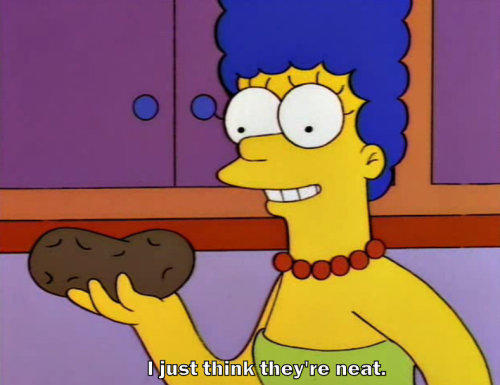

Potatoes are great

A plethora of potatoes.
Potato are very underrated vegetables. They are actually categorized as a starchy vegetable. Potatoes were domesticated in South America over 8,00 years ago.
Potatoes can be cooked many different ways
- boiled
- roasted
- mashed
- fried
- steamed
- microwaved
- braised
- put in a stew
Multiple varieties
There are over 4,000 types of potatoes grown worldwide. Here are a few examples.
| Type of Potato | Outside Color | Inside Color | Are they delicious? |
|---|---|---|---|
| Russet | brown | white | yes |
| Red | red | white | yes |
| Sweet | brown | orange | yes |
| Purple Japanese Sweet | brown | purple | yes |
| Japanese Sweet | red | yellow | yes |
| Yukon Gold | brown | yellow | yes |
| Purple | purple | purple | yes |
More Information
If you would like more information on potatoes, check out these recipes. .

Image source: Know Your Meme